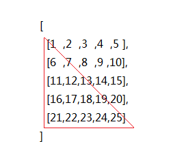
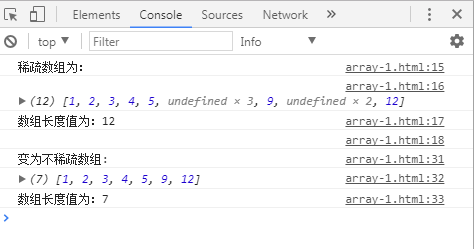

面向对象
类
“这个世界是由什么组成的？”
化学家------由分子、原子、离子等等的化学物质组成
画家------由不同的颜色、形状、纹理所组成
音乐家-----由不同的音色、音调、音质组成
生物学家----动物、植物、无机物、有机物组成
物理学家-----声、光、电、金属、非金属、固体、液体组成
众说纷纭吧？？？？
我们善于分类，那么什么是类？
类----定义属性和方法
对象
类的具体实现，继承了类所定义的属性和方法（是一种数据类型）
类是对象的抽象，对象是类的实例
面向对象的程序思路
从现实世界中客观存在的事物（即对象）出发来构造软件系统，并在系统构造中尽可能运用人类的自然思维方式
强调直接以现实世界中的事物为中心来思考问题，认识问题
程序 = 算法 + 数据结构
数据结构合理，算法简单，反之……
js是基于对象的编程语言
对象可以定义和描述很复杂的数据，让算法变的简单高效
js中的对象？
js语言中一切皆为对象，比如数字、字符串、数组、Math、Object、函数
js中对象的本质：属性和方法的集合（无序，所以对象没有length属性）
用官方一点的语言来解释对象：
什么是对象，其实就是一种类型，即引用类型。而对象的值就是引用类型的实例。在 ECMAScript 中引用类型是一种数据结构，用于将数据和功能组织在一起。它也常被称做为类，但 ECMAScript6以前却没有这种东西。虽然 ECMAScript 是一门面向对象的语言，却不具备传统面向对象语言所支持的类等基本结构。
创建对象的方式：
1、字面量 var obj = {
键值对
key:value
}
2、通过new运算符 var obj = new Object()
对象遍历：for...in循环（隐式迭代）
var obj= new Object(); // 构造函数
obj.name = "zhangsan";
obj.age = 18;
obj["gender"] = "male";
for(var key in obj){
console.log(key);
console.log(obj[key]);
}
数组 Array
上学时，班上的同学会进行分组，如下图，一竖排是一组
一列就是一个数组，一个数组里面有很多个元素（多个同学）
数组：一组数据（一个变量来承载）
var str = "Hello world"; // 一个变量存放一个数据
var arr = [1,2,3,4,5,6,7,8,9];
//往数组结尾插入元素
arr[arr.length] = 20
数组有两种定义方式
var arr = [];
//字面量的方式
var arr = new Array();
//构造函数的方式
var arr = new Array(10);//一个参数指数组长度为10
var arr = new Array(10，20，30);//多个参数指定义数组元素
因为js是弱类型语言，所以数组也是弱类型，同一个数组变量里可以有各种不同类型的元素
数组的长度 arr.length
数组的索引（下标） arr[0] - arr[arr.length-1]
数组遍历 （for循环）
var arr = [9,2,35,5,74,12,43,4];
for(var i = 0; i < arr.length; i++){
console.log(arr[i]);
}
for...in（ES5） 遍历稀疏数组的时候不会遍历到undefined
var arr = [9,2,35,5,74,12,43,4];
for(var key in arr){
console.log(typeof key); //string
console.log(arr[key]);
}
for...of（ES6）
var arr = [9,2,35,5,74,12,43,4];
for(var value of arr){
console.log(value);
}
数组是引用类型
var str = "Hello World";
var str2 = str;//内存开辟另外一段空间存放str2
var arr = [1,2,3,4,5,6,7,8,9];
var arr2 = arr;//arr和arr2指向同一段存储空间
基本数据类型：number、string、boolean、undefined、null
引用数据类型：object（array也属于object）、function
函数的值传递和引用传递
数组常见API（concat\join\reverse\slice\splice\toString\sort）
方法 | 描述 |
concat() | 连接两个或更多的数组，并返回结果。 |
join() | 把数组的所有元素放入一个字符串。元素通过指定的分隔符进行分隔。 |
pop() | 删除并返回数组的最后一个元素 |
push() | 向数组的末尾添加一个或更多元素，并返回新的长度。 |
shift() | 删除并返回数组的第一个元素 |
unshift() | 向数组的开头添加一个或更多元素，并返回新的长度。 |
reverse() | 颠倒数组中元素的顺序。 |
slice() | 从某个已有的数组返回选定的元素 |
sort() | 对数组的元素进行排序 |
splice() | 删除元素，并向数组添加新元素。 |
toString() | 把数组转换为字符串，并返回结果。 |
练习
1、定义一个30项的数组， 按顺序分别赋予从2开始的偶数；在每间隔 5个数 之后，求出前五个数的平均值；
2、循环插入菜单
3、通过循环按行顺序为一个5×5的二维数组a赋1到25的自然数，然后输出该数组的左下半三角。试编程；

4、有一个数组，先从小到大排好序，再输入一个数，要求按规律将它插入数组中。
5、定义一个含有11个元素的数组 计算下标为奇数的元素的平均数（自定义函数实现）
6、编写函数map(arr) 把数组中的每一位数字都增加30%
7、编写函数has(arr , num) 判断数组中是否存在num这个元素，返回布尔类型
排序？
冒泡排序

选择排序

了解一下排排序的思路
插入排序

快速排序

去重
1、双重fo循环，找到重复的就删除
2、利用对象属性名不冲突
3、ES6（Set是一种新的数据类型，加强版数组，默认不允许重复）
JSON是一种数据格式（对象和数组互相嵌套）
1、使用JSON形式创建一个对象，该对象存储一个学生的信息，该对象包含学号、身份证、年龄、性别、所学专业等属性信息，同时该对象包含一个自我介绍的方法，用来输出该对象的所有信息
2、根据json打印表格
ES5新增数组常见方法
2个索引方法：indexOf() 和 lastIndexOf()；
5个迭代方法：forEach()、map()、filter()、some()、every()；
2个归并方法：reduce()、reduceRight()；
1、二维数组归并为一维数组
2、用三种不同的方法做“输入一个数字得到星期几”的作业
3、用至少两种方法计算一个二维数字数组所有元素的和
4、把稀疏数组变为不稀疏数组并如下图输出
